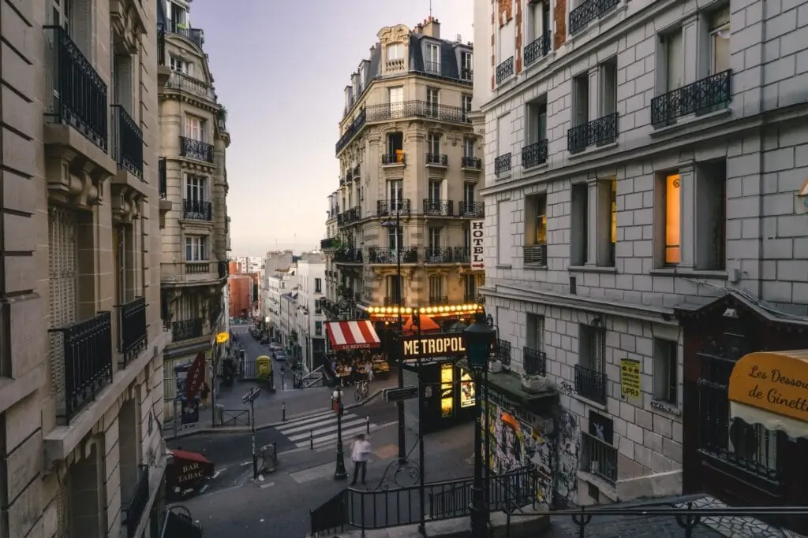
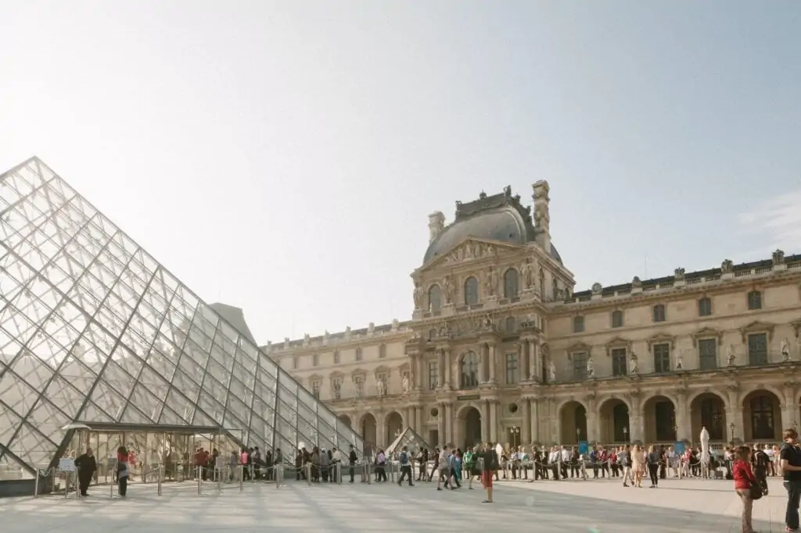
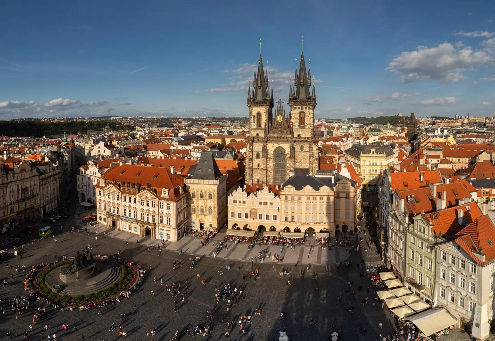

Tam anlamıyla aşıklar şehri olarak bilinen Paris, her çift tarafından mutlaka gezip görülmesi gereken yerler arasında yer almalıdır. Her geçen gün turistik yönünü artıran yapısı, mimarisi, gezip görülecek birçok farklı rotası ile seyahat severlerin yurtdışı rotaları arasında ilk sırada Paris yer alıyor. Paris, her yıl binlerce turisti evinde misafir ediyor. Turistik anlamda gelişme kaydeden ve eğlence sektörü ile her yaştan kişilere hitap eden Paris’te güzel bir tatil yaparak muhteşem bir süreç yaşayabilirsiniz. Paris gezi rehberi rotanızda mutlaka eklemeniz gereken gezilecek yerleri ile Paris’i daha yakından tanıma imkanı elde edebilirsiniz.
Paris nerede sorusu turistler tarafından en çok araştırılan konulardan bir tanesidir. Paris, Fransa’nın başkenti olmakla birlikte en büyük şehridir. Paris şehri, Londra beldesine yaklaşık olarak 287 kilometre uzaklığa sahip olmakla birlikte Brüksel’e ise 305 kilometre uzaklıkta yer alıyor. Amsterdam’a ise 505 kilometre mesafede bulunan Paris birbirinden farklı ulaşım seçenekleri ile kısa süre içerisinde dilediğiniz tüm noktalara ulaşmanıza imkan tanıyor.
Paris, yapılan son araştırmalara göre nüfus olarak 2 milyon 245 civarındadır. Ancak bu oran yaz ayları geldiği zaman değişkenlik göstermekle beraber daha fazla artmaktadır. Paris’te yaz aylarında yapılan ziyaretler yaklaşık olarak 16 milyon kişiyi aşkındır. Dünyanın birçok noktasından akın akın gelinen Paris, görülmeye değer yapısı ile gelenleri kendine hayran bırakacak nitelikte. Sizler de Paris gezi rehberi ile Paris hakkında birçok bilgi edinerek yaz tatilinizi burada geçirebilirsiniz.
Paris’e nasıl gidilir? Hangi ulaşım araçları kullanılır? Ve hangi lokasyonun daha avantajlı olduğu seyahat severler tarafından merak edilen bir unsurdur. Paris, her geçen gün turizm yönünden herkesin tercih listesinin başında yer almasından dolayı ulaşım açısından da herkesin ulaşım seçeneklerine uygun olan ulaşım araçlarına sahiptir. Paris’e gidebilmek için kullanabileceğiniz ulaşım seçenekleri şu şekildedir:
Hem hızlı hem de konforlu bir ulaşım seçeneği olan uçaklar, en çok tercih edilen ulaşım seçenekleri arasında yer alıyor. Paris’te iki adet havalimanı mevcuttur. Bu havalimanları farklı lokasyonlarda yer almasından dolayı şehir merkezine daha yakın olan havalimanını seçerek Paris gezi rehberi planlamanızı bu havalimanına göre yapabilirsiniz. Havaalanı içerisinde havaalanı servisleri de yer almasından dolayı uçaktan indikten sonra direkt olarak servisleri kullanarak gitmek istediğiniz noktaya ulaşabilirsiniz. Charles de Gaulle şehir merkezine 23 kilometre uzaklıkta bulunur. Türkiye üzerinden yapılan uçuşlar bu havalimanına iniş yapar.
Rer ile ulaşım: Şehir içi ve havalimanı inişlerinde tercih edilen ulaşım araçlarında Rer sıklıkla kullanılan bir ulaşım seçeneğidir. Paris’te ulaşım için kullanılan Rer, öğlen saatlerinde kalabalık olsa da oldukça uygun fiyatlara bu araçları kullanarak Paris’in en güzel noktalarına gidebilirsiniz.
Metro ile ulaşım: Paris’te her bir noktayı keşfetmek ve kısa sürede ulaşım sağlamak için metro kullanılıyor. Metrolar hemen hemen her 5 dakikada bir kalkıyor. Paris’in yaklaşık 62 noktasına giden metrolar ile seyahatlerinizi planlayarak metro kullanabilir ve düşük maliyetli bir tatil rotası oluşturabilirsiniz.
Paris’i gezip görmek isteyen, doyasıya her bir noktasını keşfetmek isteyen insanlar için hava durumu oldukça önem arz eder. Paris’e ne zaman gidilir sorusu da tatile gidecek olan kişilerin plan programlamasını hava durumuna göre yapmasından dolayı en çok araştırdığı konuların başında geliyor. Paris gezi rehberi ile merak ettiğiniz soruların cevabını alabilirsiniz.
Paris yapısı gereği değişken bir hava durumuna sahiptir. Ancak her mevsim ayrı bir havası olmasından dolayı hem kış hem de yaz aylarında kişilere ayrı bir keyif verir. Paris, genel olarak yaz aylarında ve Noel zamanlarında tercih edilen bir noktadır. Paris iklim bakımından yarı okyanussal, yarı kırsal iklime sahiptir. Kışları ılık ve yağmurlu olmakla birlikte, yazları 25, 30 derece arasında değişen sıcaklığa sahiptir. Yapılan araştırmalara göre Paris, 111 gün boyunca yağış almaktadır. Bu nedenle ilkbahar ya da yaz aylarında Paris’i ziyaret edebilirsiniz.
Paris gezi rehberi rotasında Paris’in en ünlü yerlerini eklemekle birlikte çeşitli tarihi noktaları ve mimari yapılarını da gezinize ekleyerek buranın her bir noktasını keşfetmenizde fayda vardır. Paris, kültürel ve mimari açıdan çok çeşitli yerlere sahip olunmasından dolayı buraya geldiğiniz zaman tatilinizi dolu dolu yaşayabilme imkanınız vardır. Paris’te gezilecek yerler şu şekildedir:
Eyfel Kulesi: Paris’in en ilgi odağı olan noktası istisnasız Eyfel Kulesi’dir. Sahip olduğu eşsiz manzarası ile gelen turistlerin ilgi odağı olan Eyfel Kulesi, Paris gezi rehberi rotanızda yer alması gereken ilk noktadır. Tam olarak 3 şehir terasına sahip olan Eyfel Kulesi, şehrin her bir detayını görebilmenize imkan tanıyor. Yaklaşık olarak 324 metrelik bir yüksekliğe sahip olan Eyfel Kulesi görülmeye değer güzelliği ile gelen turistleri misafir ediyor. Romantik anların yaşanmasına da imkan tanıyan Eyfel Kulesi, Paris’in sembolü haline gelmiştir.
Notre Dema Katedrali: Eyfel Kulesi’nin ardından Paris gezi rehberi içerisine dahil edebileceğiniz rotalardan birisi olan Notre Dema Katedrali, mimari yapısı ile oldukça zarif bir görünüme sahiptir. Yapımı 1163 ve 1334 yılı olan Notre Dema Katedrali Romalılar tarafından da kutsal ilan edilmiştir.
Paris beldesinde mutlaka gezmeniz gereken 10 yer mevcuttur. Bu 10 yer
Paris gezi rehberi rotanıza mutlaka eklemeniz gereken rotalardır.
Bu rotalar şu şekildedir:

paris, ünlü bir şehir olmasından dolayı ulaşım seçenekleri de gelişmiştir. Paris gezi rehberi rotanızda isterseniz otobüs ile yolculuk yaparak şehrin her bir noktasını gezebilir, isterseniz metro gibi hızlı ulaşım araçları ile kısa süre de merak ettiğiniz tüm noktalara ulaşabilirsiniz. Aynı zamanda Paris’te taksiler de sizlere hizmet veriyor. Konforlu bir yolculuk için taksi tercihinde bulunabilirsiniz.
Paris kendine özgü lezzetleri ile çeşit bakımından zengin ürün ağına sahiptir. Paris’e geldiğiniz zaman burada tatmanız gereken en önemli yiyeceklerden bir tanesi soğan çorbasıdır. Soğan çorbası, et suyu ile harmanlanarak yapılan bir çorbadır. Eşsiz bir lezzete sahiptir. Paris’e özgü bir diğer farklı lezzetlerden bir tanesi Ördek confittir. Soğuk kış aylarının vazgeçilmez yemeği olan Ördek confit, düşük ısıda kendi yağında pişirilen bir yemektir.
Farklı lezzetleri tatmaktan hoşlanan insanlar için salyangoz mutlaka denenmesi gereken bir yemektir. Salyangoz çok fazla üretilmediği için lüks yemek alternatifleri arasında yer alıyor. Kendine has farklı bir lezzete sahip olan bu yemeği mutlaka yemeniz tavsiye edilir. Paris’te ne yenir seçeneklerine bakarak kendi damak zevkinize uygun olan yemek türlerini seçebilirsiniz.
Paris’te alışveriş yapabileceğiniz birçok alternatif mevcuttur. Kendine özgü sembol ürünleri ile seyahat severlerin gözdesi olan hediyelik eşyalar, birbirinden farklı lokasyonlarda yer alıyor. Paris’ten alabileceğiniz en güzel hediye alternatiflerinden bir tanesi Paris sembolü olarak bilinen Eyfel kulesi anahtarlıklardır. Çeşit çeşit modelleri ile fiyat bakımından da uygun olan bu alternatiflerden yararlanabilirsiniz.
Paris gece hayatı denildiği zaman akla ilk gelen noktalardan bir tanesi Bastille bölgesidir. Burada en ünlü gece kulüpleri bulunur. Barrio Latina dört katlı bir mekandır ve her bir katında farklı tarzda müzikler çalar. Hem dekoru hem de eğlenceli tarzı ile Paris’e gelenlerin ilk tercihi olan Bastille bölgesindeki mekanları tercih ederek dilediğiniz kadar eğlenebilir ve tatil yapabilirsiniz.